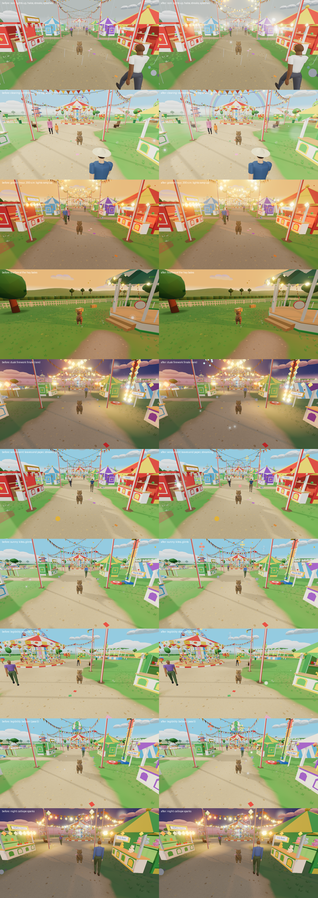

Rows (verify-fair.html with ?wx=): rain (lights come up, mist halos, streaks through the bulbs, splashes, wet shine); clearing (rainbow over the big wheel, steam); golden hour 200 s in (lights ramp up); hay bales (fireflies); dusk finale; wind; sunny (kites, glints); stray cat and balloon enlarged (pass 5 legibility); night (calliope sparks).
Honest note: rain and clearing are clearly different. Golden hour, kites, wind leaves, fireflies and the finale are subtle or small at the play camera (the top of the frame stops near the big wheel's rim, so high sky events only show at the edge). Wet shine is faint. Sounds (patter, thunder, gust) and bunting streaming cannot be seen in a still. Heat shimmer and crisp shadows were not done.
